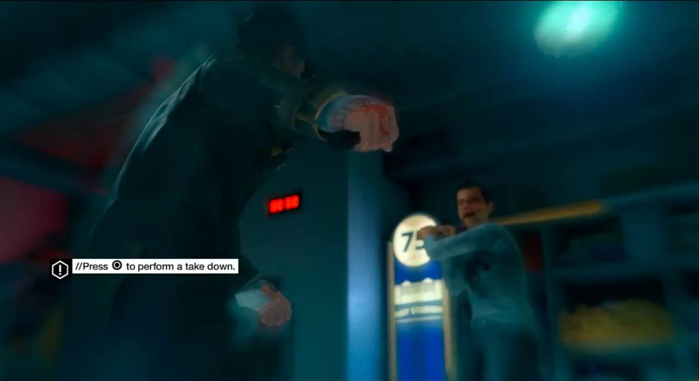
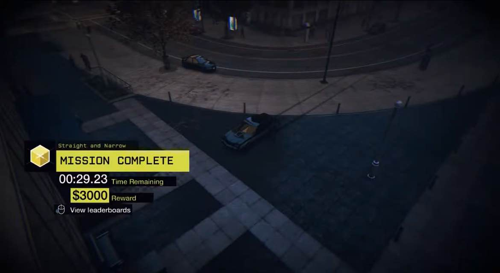
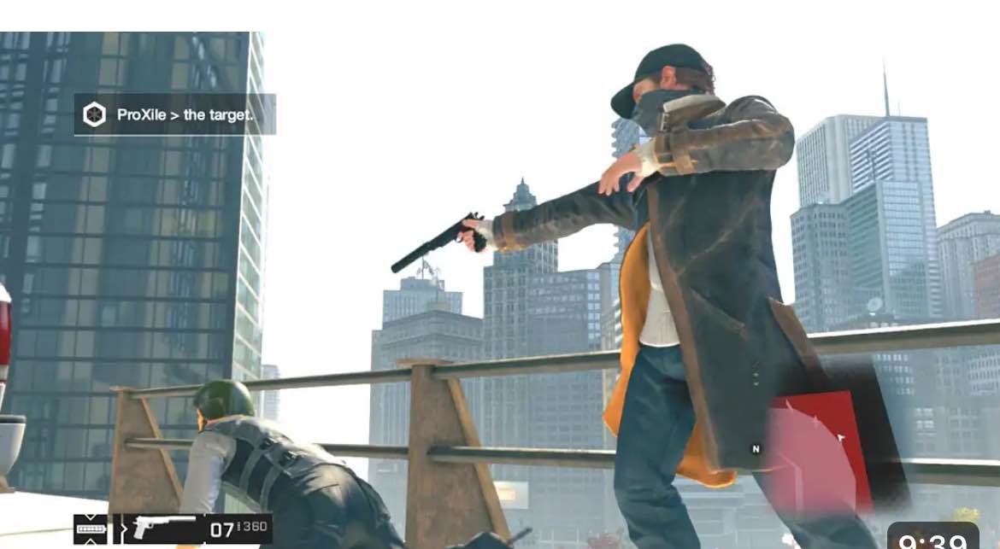
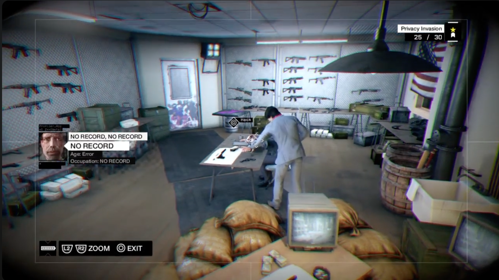
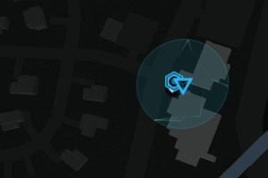
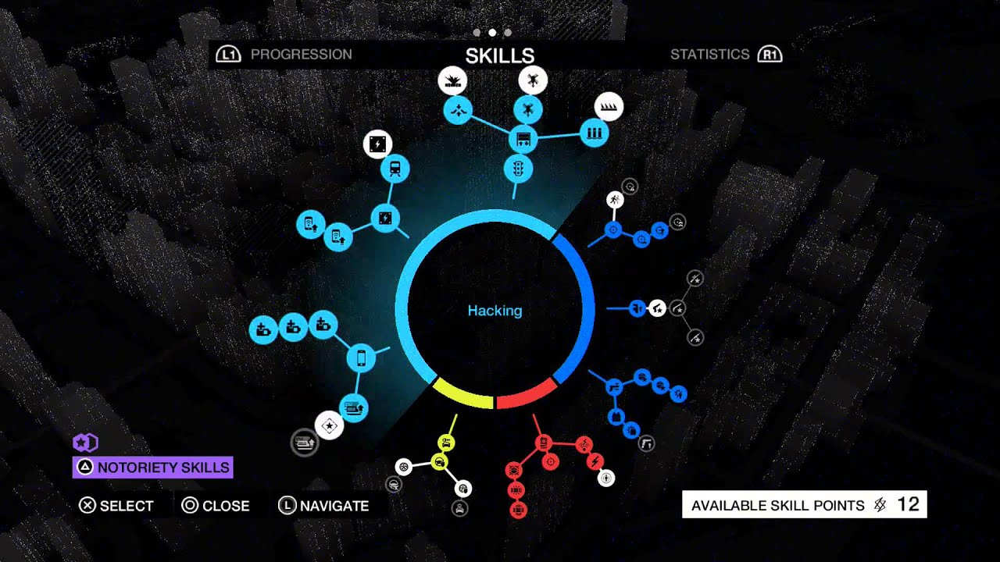

#1 Bronze Trophy -> Hello world : take down Maurice

[Grind] #2 Silver Trophy -> End of the line : finish 40 fixor contract

#3 Silver Trophy -> Baseset Base : complete all the gang hideout mission

#4 Silver Trophy -> They call him the Vigilante : Complete every investigation
There are 5 different investigations, some are unlocked through story progression. This trophy resembles a platinum trophy, in the sense that you automatically earn this trophy when you unlock all 5 other trophies related to investigations
#5 Silver Trophy -> Peephole : Complete every privacy Invasion
Once at a Privacy Invasion location, you can intrude on someones residence by hacking their Wi-Fi box, usually located on a wall on the outside of the building. Sometimes you will have to pull out your phone and follow a trail to unlock the boxes, or other times you will have to do the hacking minigame. When you finally access the Wi-Fi box, you will usually be treated to pretty funny scenes, like hacking into an Xbox Kinect to spy on people working out. You don't have to do anything other than watch, you don't even have to watch the whole thing, you can leave in the process if you feel like doing that. Complete all 30 Privacy Invasions in the game for this trophy.

#6 Silver Trophy -> Road Rage : Complete every Criminal Convoy
There are 18 Criminal Convoy missions and you'll need to complete all of them for this trophy. You'll be tasked (depending on the mission) to either takedown the target(s) (non-lethally) or eliminate/kill them. Targets you need to kill tend to try escaping if given the opportunity whereas takedown target(s) will stay and fight. Once you've completed the objective you can either eliminate all the remaining enemies or escape. You can use a car to block their route causing the convoy to stop though if you wait too long it will try finding an alternate route. This is a great way to plan an ambush; I've found that using a grenade launcher before enemies get out of the car is a very efficient way to reduce the opposition's numbers. Just don't blow up the target(s) if you have to take them down non-lethally.
#7 Silver Trophy -> Enforcer : Use the crime Detection system to take down 20 confirmed criminals
You can also sometimes find criminals by profiling random people. You can set a waypoint guiding you to it or ignore it. On your map it will have the same symbol and if you are close enough it will look like the picrture provided. You will need to carefully search the area to find either the victim or the criminal. If yoi get too close a yello triangle will appear above their heads anf if you wait long enough you'll fail the event. You'll want to wait and tail the victim/criminal until it says "INTERVENE" and then you can either shoot or takedown the criminal (it doesn't matter which you choose). Completing 20 of these will unlock the trophy. If you ignore or fail one don't worry as they will continue showing up. Random street crimes that do not have this symbol (you'll normally hear someone scream and then see a red dot showing an enemy on your map) do NOT count for this trophy (so don't help the victim :p)

#8 Gold Trophy -> Freeware : Unlock every skill in the skills tree
There are 52 Skills available in the game to unlock, which require 137 skill points. Completing the story, finding collectibles, and doing side missions will provide you with skill points on a regular basis on your road to unlock all 52 skills. You will easily get enough skill points well before finishing all of the side missions/collectibles in the game, so just focus on finishing the story, finding collectibles, and doing side missions and the skill points will all come naturally. Notoriety skills (online skills) are not required for this trophy. Some later skills in the skill tree have prerequisites before they unlock, most of the prerequisites are simple things like finishing 5 Fixer Contracts or playing the NVZN augmented reality minigame on Aiden's phone. The hardest prerequisite will be for the Maximized Focus skill upgrade, which requires completing 10 levels of chess puzzles. There are four different types of chess games available, the quickest type of chess game to complete is the "end-game" variant, which you can find at the southeast corner of The Loop district. Below is a video guide that can help you finish all 10 of these chess puzzles in a matter of five minutes.
